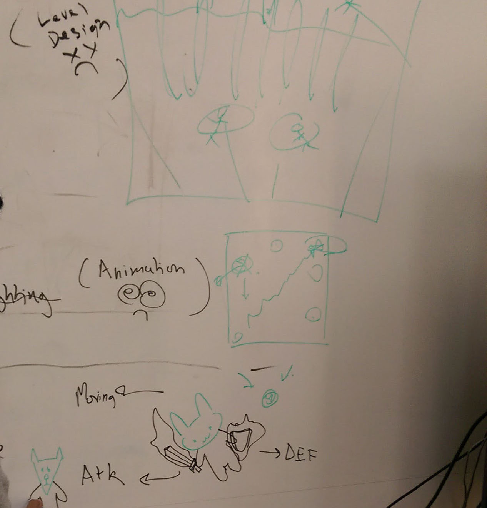
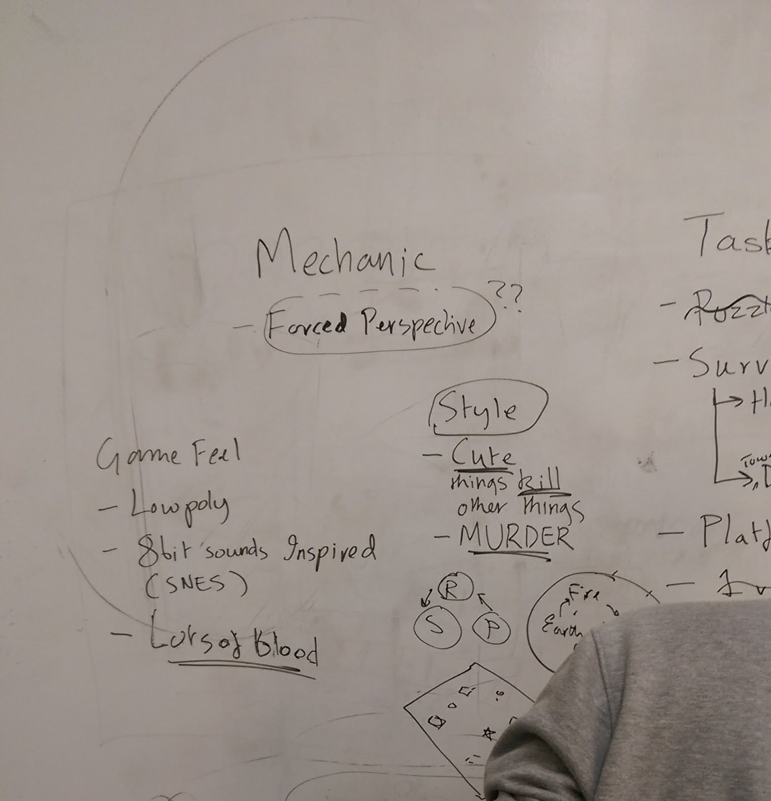
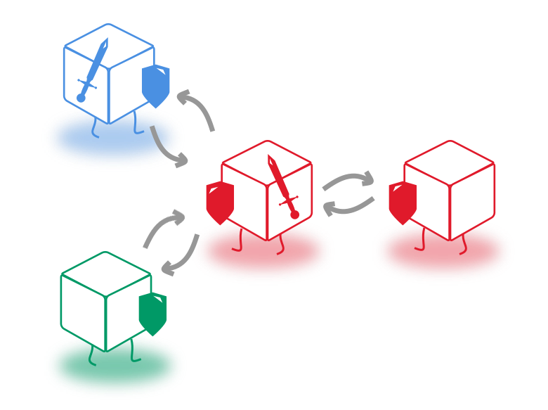

Project:Chromaga
A game about being a small pixel looking for a larger cause.

My Role:
I led playtesting of the game. I sought out participants, partnered with group members to run them through a demo of the game, then had them share their thoughts on the game experience afterwards. I was one of the leads on analyzing this data reporting on it to other group members as well as our instructor. I was also responsible for level design, visual and audio FX, game feel, and scripting for environmental objects.
Background
Video games sit in a unique part of the sphere of technology (and UX). You can (and sometimes expect) a different experience every time you interact with a game. Because of this, there are myriad challenges and things to learn from a development side to make a video game that's "successful" or even "fun". Things like balance (making sure that a particular character or team in a game doesn't have an unfair advantage over another) or immersion (getting "lost" in the game) are considerations that go into both development and playtesting. It has been a goal of mine for a long time to learn how to program on some level. Taking a Video Game Design course allowed me that opportunity, alongside the chance to understand more about one of my favorite hobbies.
Development and Playtesting
Chromaga started as rock-paper-scissors style concept. We wanted to create a game that was built around a mechanic that was easy to pick up, but required some strategy to master. We decided to create a melee-based combat system in the vein of some of our favorite games like Darksiders and Devil May Cry. We met regularly to discuss mechanics for the game, as well as the look and the feel of the environment the game would take place in.
When the alpha of our game was completed, we employed guerrilla-style participant recruitment and ended up with a group of players who had wide spread of video-game playing experience. This was beneficial for our playtesting as it allowed us to see what aspects of the game might have been broken versus simply being "difficult" or less forgiving to people not as familiar with videogames.
Goal: Gather the required amount of points to complete the game or survive for 5-10 minutes, whichever comes first.
In addition, we also asked questions about the heads-up display on the screen and whether it contained the necessary information the player needs to execute strategies during the game.
Findings
| Problem | Action Item |
|---|---|
| Players struggled to kill enemies in the game, meaning players scored few, if any points. | Reduce difficulty of enemies, possibly increase damage output of player character. |
| Players often went negative in point count due to gameplay elements that took points away | Reduce penalties for errors in gameplay, possibly increase point accumulation for correct gameplay. |
| Players were frustrated by the inability to attack while moving | Implement the ability to attack enemies while moving in a given direction |
| Parts of the level were not obviously marked in the environment, participants did not explore or discover the other half of the level. | Rework visual elements to make hallways and paths to other areas more visible, reduce the amount environmental objects obstruct screen space. |
We compiled these findings and action items into a document which guided the direction of game development until completion. We ended up getting a 104/100 on this project! Not too bad!
About the game
Chromaga is a third person hack-and-slash game. You play as the white pixel; you're trying to escape the television that's held you captive your entire life. In your way stand your brothers and sisters who have been turned against you by the gatekeeper of the television. As you defeat enemies, you carry their essences with you until the gatekeeper himself decides to emerge and deal with you himself. Will you win you freedom?
As stated above, the game employs a rock-paper-scissors mechanic. In this case, the RGB colorscheme of old CRT televisions provide that triad, and work very similarly to a certain game with pocket monsters. The white pixel's weapons are one of these colors at any given time, and can be cycled when the character enters a changing portal. Blue is super effective against red enemies, red is super effective against green enemies, and green is super effective against blue enemies.

The map consists of two rooms, with two hallways (a one-direction and a two-direction) joining the two of them. The first room, the Television, is the insides of a CRT television and consists of many stationary objects, as well as a cable that swings from the top of the box. In a future iteration of the game, these would deal environmental damage to the player if they contacted them.
The second room, inside the power outlet, contains movable objects (such as giant nuts and bolts) that the player can utilize to block themselves off from enemies. Portals exist in both of these rooms.
Once the player has killed enough enemies to fill each of the 3 RGB meters to 255, the gatekeeper is summoned who has extra health and can change color at will. Killing him is the win condition for the game and earns you your freedom.
Here's a video from our beta release.
Video courtesy of Qiaochu Mu
Special thanks to
- Edith Li https://www.behance.net/abenoy
- Vedant Swain http://vedantswain.com
- Qiaochu Mu http://qiaochumu.com